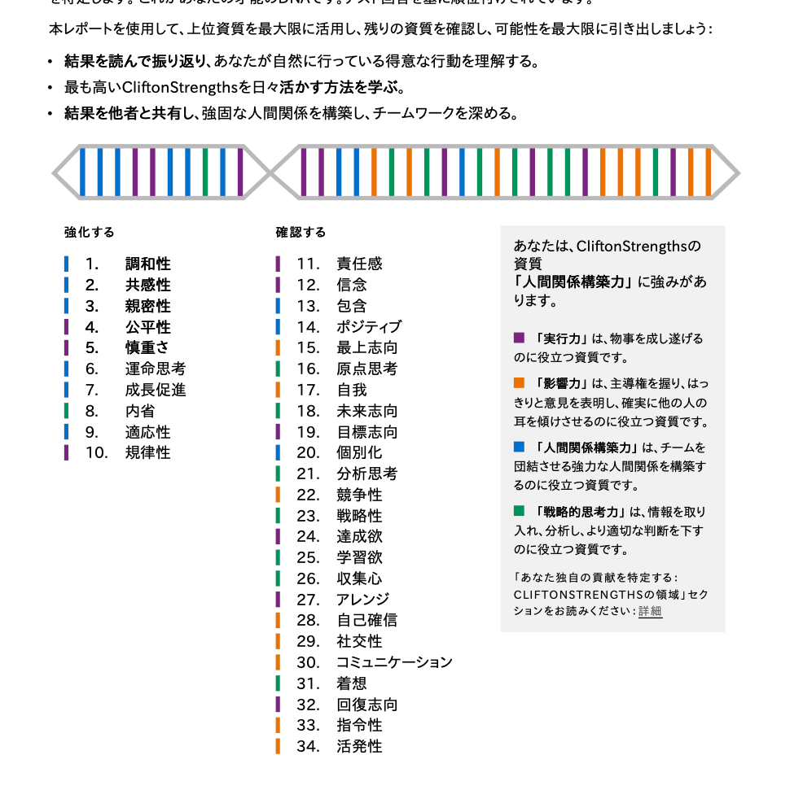

神社の森に立つような静けさで、
ひとりひとりに 寄り添う 管理栄養士。
⛩️ 生田の森・吉方位の旅・祈りの場所 ──
「あなたが居てくれて、今日もだいじょうぶ」と言われ続けてきた人の物語と、
これから「自分にも、それを言ってあげる」ための取扱説明書です。
リベシティのプロフィールに書かれていた言葉と、ストレングスファインダー34の結果から見えてきた、みりさんの輪郭です。コーチングセッションの前に、ふたりで一緒に眺めるための仮版。
みりさんは、「ひとりひとりに、静かに寄り添う管理栄養士」。委託給食 → 食品工場 → 保育園 → 介護老健 → 病院（外来・透析・外科・療養・回復期リハビリ）と、食を必要とする人のライフサイクル全域を渡り歩いてきた、20年以上のベテラン。
息子さんが生後2ヶ月の時に、夫さまを急に亡くされた春。「数年間どうやって生きてたかわからない」絶望から立ち上がって、仕事に恵まれて自立し、今は 「自立して経済的にも豊かになって人生を楽しみたい💕」 と書ける場所まで戻ってこられました。
上位10資質を並べると、人間関係構築力 5つ × 実行力 4つ × 慎重さ。影響力ゼロ・戦略的思考力ゼロ。これは34資質中、「人を見る目」と「最後までやり遂げる手」 が、二本柱で組み合わさっている並びです。前に立ってグイグイ引っ張るより、横に並んで一人ひとりに丁寧に届ける ことが、みりさんが一番呼吸しやすい場所。
そして、リベ大に出会って2年半。保険・証券・口座・通信の30項目以上を、ひとつひとつチェックマークで仕留めてこられました。2025/12/23には 単独で栄養オフ会 も主催されています。今、人生のいちばん視界が開けてきたところに立っていらっしゃる ── そんな感じがしています。
管理栄養士＋第1種衛生管理者
リベシティ・イルカ会員
2025/07/31に受検された、Gallup CliftonStrengths® 34資質の順位です。これからじっくり、ひとつずつ見ていきますね。

それぞれの資質がどんな手ざわりで、みりさんの中でどう動いてきたか。20年以上のキャリアと、リベでの2年半の歩みと一緒に並べました。
トップ5の影に見えるけど、6〜10位がみりさんの「明るさ」「ルールを守る安心」「誰も外さない優しさ」「価値観の芯」「最後までやり抜く力」を支えています。
絶望からも「人生を楽しみたい💕」と書ける明るさ。グイグイ盛り上げる型じゃなく、しんどさを通り抜けても前を向ける 重みのある明るさ。
みんなに同じ基準で接する力。給食の献立作成・アレルギー対応──「全員に、同じ栄養を、同じタイミングで」が体に染みている人。
誰も置いていかない優しさ。新参の人を温かく迎える 役回りが自然。
大切な価値観を絶対に守り抜く強さ。みりさんが好きな場所はぜんぶ 祈りの場所──そこに通うのは、信念9位の人の生き方。
引き受けたことは必ずやり抜く力。「自分との約束」も「お客様との約束」も、同じ重さで守る 人。
このページとセットで 「みりさん 資質図解ブランチ」 を別ページでご用意しました。みりさんのTOP10それぞれに「メタファー＋PDF解説＋みりさん接続＋セッションで聞きたいこと」を1枚ずつ詰めてあります。気になる資質をふっと開きたいときにどうぞ。
みりさん 資質図解ブランチへ進むプロフィールやキャリアを並べると、自然と浮かび上がってくるパターン。ぜんぶ、上位資質の自然な合わせ技です。
給食 → 工場 → 保育園（離乳食〜食育） → 介護老健 → 病院（外科〜透析〜回復期）。生まれてから人生の最後まで、食を必要とする人を全部見てきた。これだけの幅を歩いた管理栄養士、なかなかいない。
ファンドラップ・NISA移管・ユニットリンク・各種保険・ドル建て・変額・SIM・クレカ・銀行口座…。勢いじゃなく、ひとつずつチェックマークで。慎重さ × 責任感 × 公平性 の合わせ技。
2024年1/7に神戸オフィスに飛び込んで オフ会に飛び入り参加させてもらった。それから約2年後の 2025/12/23に単独で栄養オフ会を主催。包含 × 親密性 × ポジティブ がきれいに3つ揃って働いた。
生田の森🌳、神社仏閣巡り⛩️、吉方位旅行🚄、システィーナ礼拝堂🇮🇹──ぜんぶ 静かに自分の芯と対話する場所。信念9位の人ほど、こういう時間が必要。
「旅先のスーパーに行ってその土地の食材を見ること」「旅先の駅舎を見ること」── 観光地より、その土地の人の生活が見える場所に惹かれる。共感性 × 適応性 × 学習欲（11位以下だけど）。
クッキー、パイ、サブレ、チーズケーキ。「派手なケーキ」じゃなくて「静かでバターのきいた焼き菓子」。これも調和性 × 慎重さの世界観そのもの。
「産まれたばかりの息子をかかえて絶望のあまり数年間どうやって生きてたかわからない」「幸い仕事に恵まれたので自立して経済的にも豊かになって人生を楽しみたい」── 信念 × ポジティブ × 責任感の生き方。
プロフィールの「その他」欄、「同じ志を持つ皆さまとお話できるのを楽しみにしています！」。これは 親密性 × 包含 × 信念 の人が、自分から書ける言葉。広く浅くじゃなく、同じ方向を向ける人と、深く。
セッション前の今でも、すでに みりさんの中で動いている "稼ぐ力／届ける力" の素材。プロフィールに書かれた事実から、根拠を並べてみます。
給食 → 工場衛生 → 保育園（離乳食〜食育） → 介護老健 → 病院（外来栄養指導〜透析〜外科〜療養〜回復期リハ）。これだけの幅を歩いた管理栄養士はかなり稀少。「持病があって食べていいものが厳しい人」 の相談に、ほぼ全領域で答えられる人です。
ファンドラップ解約・NISA移管・ユニットリンク解約・医療保険解約・終身保険解約・個人年金解約・ドル建て終身解約・変額保険解約・SIM変更・不要クレカ解約・銀行口座整理…。「決めたことを最後までやり切る」立派なキャリア資産です。これは 同じ悩みを持つ人 にとって、ものすごく価値のある経験。
これ、すごく大事な実績。「迎えてもらう側」から「迎える側」に、自分の足で立った日です。包含・親密性・ポジティブ・公平性・専門性 ── みりさんの上位資質が全部、一気に動いた瞬間。もう一度、形を変えて続けられる 経験です。
みりさんが今もっている 「自立して経済的にも豊かになって人生を楽しみたい💕」 という言葉は、頭で考えた目標じゃなくて 自分が歩いてきた道 から出てきた言葉。同じような場所にいる人にとっては、これ以上ない説得力のあるメッセンジャーになれる人です。
みりさんの場合、「これから何かを身につけて」じゃなくて、「すでにある20年の専門性と2年半の家計改善経験を、どんな形で、誰に届けるか」── そこが次のテーマになりそうです。
たとえば、 ── 「持病があっても安心して食べられて、家計にも優しい献立」、「シングルマザーが、絶望期から自立期に進むための栄養と家計の両方サポート」、「働きながら療養している人の、無理のない食事と生活の整え方」 ── みりさんにしか書けないテーマが、もう手の中にあるんじゃないかと思います。
「すでに持っているものを、これからも誰かに届け続けられる人」🌷スイッチが入りやすい場所、充電が要りやすい場所。本人にも、周りの人にも知っておいてもらえると、お互いがラクになります。
単体の資質より、組み合わせで読むほうが、その人の本当の動き方が見えてくる。みりさんの中で、よく一緒に動いている4つの組み合わせ。
透析患者さん、糖尿病の方、回復期リハの方 ── 「他で言えなかったしんどさ」を、みりさんになら話せる。それは、合意点を探し、感情を汲み取り、長く関わる ── この3つが同時に動くからこそ生まれる空気です。
食品工場衛生・アレルギー対応・透析の食事管理 ── ぜんぶ「事故が許されない」領域。静かに、ルール通りに、最後までやり抜く。みりさんがいるから、その現場は安心して回ってきました。
神戸オフィスに飛び込んだ翌々年、自分が単独で栄養オフ会を主催。変化を恐れず・誰も外さず・明るく場を作る──このコンボで、リベでの居場所をひとつずつ広げてこられました。
夫さま急逝 → 数年憔悴 → 仕事で立つ → 家計を整える → 人生を楽しみたい。これは、芯がブレない × 前を向ける × 決めたことをやり抜く の3つが、ずっと支えてきた20数年の歩み。
セッションの前、まだみりさんと直接お話ししていない段階で、リベシティのプロフィールから拾わせてもらった言葉たち。これだけで、もうたくさんのことが伝わってきます。
みなさま初めまして。みりと申します。どうぞよろしくお願いします！
息子が生後2ヶ月の時に夫が倒れてその日のうちに天国にお引越ししてしまいました⭐︎
産まれたばかりの息子をかかえて絶望のあまり、数年間はどうやって生きてたかわからないくらい憔悴してましたが、幸い仕事に恵まれたので自立して経済的にも豊かになって人生を楽しみたいと思っています💕
2023年12月、新NISAについてのYouTubeを検索している時に両学長の動画に出会いました！
朝の学長ライブでの「ゴミットリンク」に衝撃を受けて真剣に家計管理を開始しようと思い、年末ライブの日にリベシティに入会しました😆
そして年明けの1/7に初めて神戸オフィスを訪問し、その時に開催されていたオフ会に 飛び入り参加 させていただきました。
⭐︎趣味⭐︎
吉方位旅行🚄、神社仏閣巡り⛩️
旅先のスーパーに行ってその土地の食材を見ること🍊
旅先の駅舎を見ること
好きな食べ物：クッキー、パイ、サブレ、チーズケーキ
好きな場所：生田の森🌳
好きな国：日本とイタリア🇮🇹特にシスティーナ礼拝堂
同じ志を持つ皆さまとお話できるのを楽しみにしています！
オフィスやチャットでご縁がありましたらよろしくお願いします💕
53歳、息子さんは高校生、管理栄養士20年、家計改善2年半。「絶望期 → 自立期 → 整える期 → 楽しむ期」の、いちばん視界が開けてきた場所。
セッション前の今、みりさんのプロフィールと34資質から、わたし（おけもん）が立てている「ここを一緒に話したいかも」の仮説5つ。当たってるかどうかは、当日みりさんと答え合わせです。
どの順番でもいいし、ぜんぶ通らなくてもOK。みりさんの心がふっと動いた問いから、ゆっくり開いていけたらいいなと思っています。
20年以上の管理栄養士のキャリアの中で、いちばん これが自分らしい仕事だった と感じる現場はどこでしたか？
1日のうち、何時間ぐらい、それに使えたら理想ですか？ いま実際に取れている時間は、どれくらい？
次にやるとしたら、何を変えたい・何を残したいですか？ 今度は 誰に来てほしい ですか？
仕事のかたち、暮らす場所、関わりたい人、行きたい場所、書きたいもの ── どれから話したい？
言葉にならなくても大丈夫です。そこに行きたくなる時の気持ち から話せたら嬉しいです。
ゴール設定じゃなくて "気持ちのイメージ" で大丈夫です。これがあると、わたしも安心して伴走できます🌷